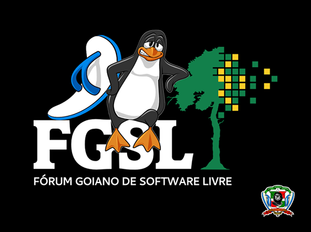

<TABLE WIDTH='100%'><TR>
    <TD WIDTH='15%'></TD>
    <TD WIDTH='70%'><CENTER></CENTER></TD>
    <TD WIDTH='15%'></TD>
</TR></TABLE>
<H1>ENECOMP</H1>
<H2>UFRA-PA, 11/12/2015</H2>
<H1>Geometria Computacional: As Curvas da Bosta...</H1>
<H2><A HREF='https://github.com/olesmith/poops' TARGET='new'>https://github.com/olesmith/poops</A></H2>
